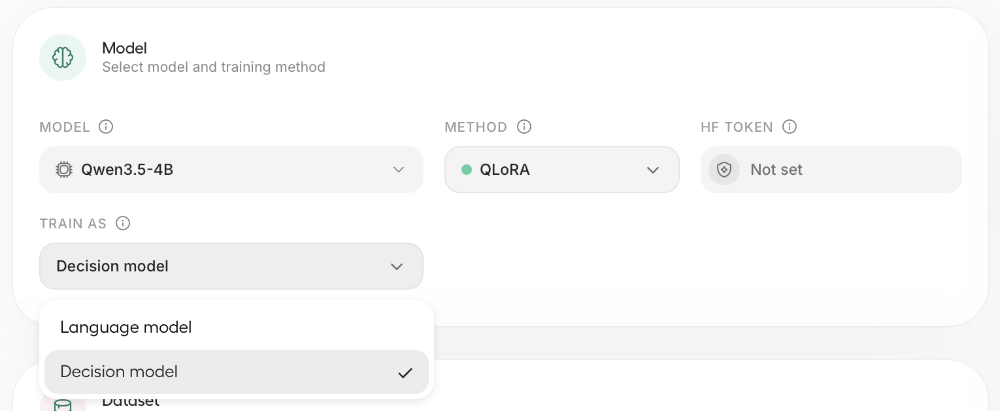
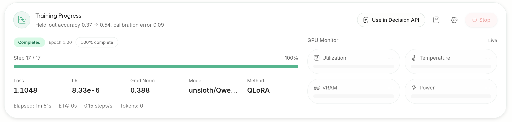
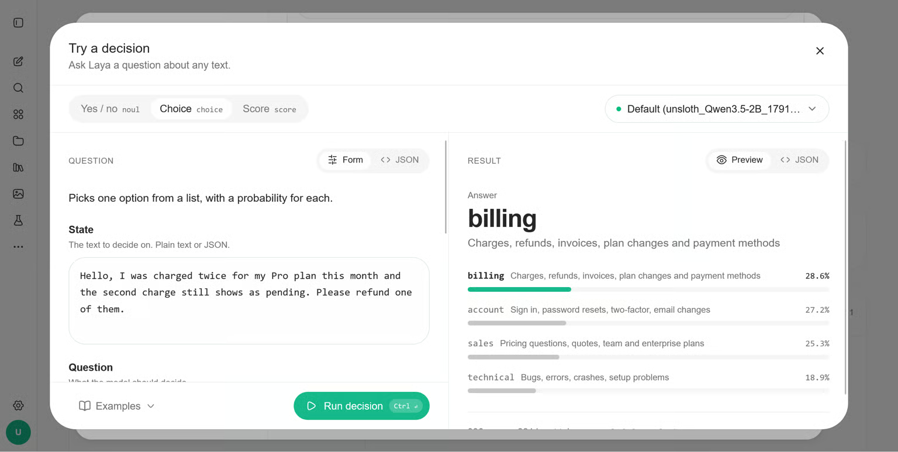
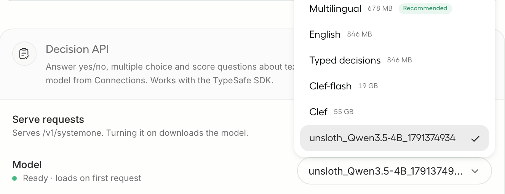
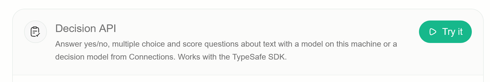
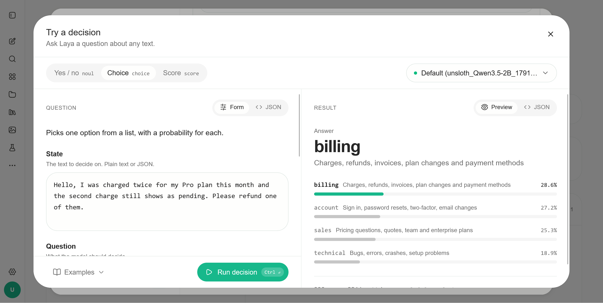

用 Unsloth 训练你自己的决策模型（Train your own Decision Model with Unsloth）
原文：Train your own Decision Model with Unsloth · Unsloth 官方文档 · unsloth.ai · 快照 2026-10-08
译文为社区学习用途的非官方中文翻译，版权归原作者所有。
作者与来源
Unsloth（unsloth.ai，UnslothAI）是最知名的开源大模型微调库之一：以自研 Triton 内核把 LoRA/QLoRA 微调做到显著更快、更省显存著称，覆盖 Qwen、Gemma、Llama 等主流开源模型，提供桌面App、命令行与 Python API 三种用法。
本页是其官方文档的一篇教程，宣布微调库一等支持「决策模型」训练：新增 FastDecisionModel / DecisionTrainer API，给语言模型接一个与 Clef 同设计的打分头，把 Qwen、Gemma 这类 LLM 变成「只做判断、不生成文本」的决策模型；数据格式与 Laya、Clef 通用，训练完可以直接挂进本地的 Decision API，顶替 laya / jev-latest 端点对外服务。
与本库其他条目的关系：这等于把本库 25 号（MacBook 上 RL 训 Gero-4B）和 27 号（免训练读 logits）两条自制路线做了「工业化合流」——免训练路线保底、LoRA 微调可达 78%，而且 4GB 显存、42 分钟就能出结果；10 号（laya-model）训的模型本身还能继续微调（表中 Laya fine-tuned：2.5GB、10 分钟、77%）。
正文
微调 Qwen、Gemma 这类 LLM，让它们以带校准的概率做决策。
你现在可以用 Unsloth 训练自己的决策模型——就像 Jev、Laya 和 Clef 那样。微调 Qwen3.8 和 Gemma 4 等 LLM，把它们变成决策模型：做决策而不是生成文本。微调后的模型读取你的输入，给你提供的选项打分，返回一个带概率的选择。训练后的基准成绩见下表：
| 模型 | typed-decisions | BANKING77 | CLINC150 | 留出集准确率 |
|---|---|---|---|---|
| Qwen3.5-0.8B | 36% → 73% | 7% → 74% | 19% → 76% | 78% |
| Qwen3.5-2B | 33% → 78% | 1% → 58% | 1% → 62% | 81% |
我们用 LoRA（r=64）只训了一个 epoch、给 LLM 接上 Clef 式的打分头，就把下游准确率从 30–37%（大致等于瞎猜）拉到了最高 78%。
训练使用与 Laya 和 Clef 相同的数据集格式。测试集对训练数据做了去污染（decontamination）处理。
演示视频：github.com/user-attachments/assets/92959172-d2a2-450b-a5bf-6369a1e5ae16
所有模型都可以这么做——你还可以对 Laya / Clef 这类现成决策模型继续微调。
| 模型 | 测试准确率 | 显存 | 训练时长 |
|---|---|---|---|
| Qwen3.5-0.8B | 78% | 4GB | 42 分钟 |
| Qwen3.5-2B | 81% | 8GB | 40 分钟 |
| Llama 3.2 3B | 79% | 4.1GB | 30 分钟 |
| Gemma 4 E4B | 77% | 14.4GB | 49 分钟 |
| Laya（继续微调） | 77% | 2.5GB | 10 分钟 |
数据集混合了 12 个来源外加 typed-decisions：ag_news、arc、banking77、boolq、clinc150、commonsense_qa、mmlu、mnli、prompt_injections、snli、sst5 和 wanli。测试集共 3,000 行：2,000 行来自 typed-decisions，500 行来自 BANKING77，500 行来自 CLINC150。
🦥 在 Unsloth（桌面版）里训练
第一步：安装 Unsloth。 最简单的方式是下载 Unsloth 桌面应用，支持 macOS、Windows 和 Linux。也可以手动安装——macOS/Linux/WSL：curl -fsSL https://unsloth.ai/install.sh | sh；Windows PowerShell：irm https://unsloth.ai/install.ps1 | iex。
第二步：选模型和数据集。 打开 Train 标签页，选一个 LLM（比如 unsloth/Qwen3.5-4B），然后把 Train as 设为 Decision model。Unsloth 会自动填好合适的设置。想复现我们的结果：epochs 设 2、LoRA rank 设 16、学习率设 2e-4。上传文件或从 Hugging Face 选一个数据集（按数据集格式），typed-decisions 要把 Subset 设为 all。

第三步：开始训练。 点击 Start Training。Unsloth 会报告训练前后在留出决策上的准确率，并对模型的置信度做校准。

第四步：在 Decision API 里使用。 点击 Use in Decision API。之后使用 laya、default 或 jev-latest 的请求都会路由到你的模型。

你的模型还会以运行名出现在 Settings → API 的 Decision API → Model 下拉里。

第五步：试玩。 在 Decision API 的 "Try It" 里直接跟训练好的决策模型交互：


🐍 用代码训练
pip install --upgrade unsloth 安装或更新后，用下面的代码训练你自己的决策模型：
from unsloth import FastDecisionModel, DecisionTrainer, is_bfloat16_supported
from datasets import load_dataset
from transformers import TrainingArguments
model, tokenizer = FastDecisionModel.from_pretrained(
model_name = "unsloth/Qwen3.5-4B",
max_seq_length = 2048,
load_in_4bit = True,
)
model = FastDecisionModel.get_peft_model(
model,
r = 16,
lora_alpha = 16,
lora_dropout = 0,
use_gradient_checkpointing = "unsloth",
random_state = 3407,
)
dataset = load_dataset("LocalLLaMA/typed-decisions", "all", split = "train")
items, report = FastDecisionModel.build_dataset(dataset, tokenizer, model)
print(f"Skipped {report['skipped']} of {report['total']} decisions")
train_items, eval_items = FastDecisionModel.split_holdout(items, seed = 3407)
trainer = DecisionTrainer(
model = model,
processing_class = tokenizer,
train_dataset = train_items,
eval_dataset = eval_items,
args = TrainingArguments(
per_device_train_batch_size = 8,
gradient_accumulation_steps = 4,
num_train_epochs = 2,
learning_rate = 2e-4,
lr_scheduler_type = "cosine",
warmup_steps = 10,
weight_decay = 0.01,
bf16 = is_bfloat16_supported(),
fp16 = not is_bfloat16_supported(),
eval_strategy = "epoch",
logging_steps = 10,
output_dir = "outputs",
report_to = "none",
seed = 3407,
),
)
trainer.train()要用 Llama 或 Gemma 4，把 model_name 改成 unsloth/Llama-3.2-3B-Instruct 或 unsloth/gemma-4-E4B-it。其他 Unsloth 能微调的 LLM 应该同样可行。
用你自己的数据时，参考数据集格式：每行包含一个状态（state）、要判断的问题和金标答案。
校准与保存
在 split_holdout 留出的那些数据上做校准，让模型的概率与它的实际正确率对齐：
metrics = FastDecisionModel.calibrate(model, tokenizer, eval_items)
print(metrics) # 留出集准确率、校准误差（ECE）和损失然后保存。save_pretrained 保存 LoRA 适配器和打分头；save_pretrained_merged 保存完整的 16-bit 模型：
model.save_pretrained("qwen-decisions")
model.save_pretrained_merged("qwen-decisions-merged")
# model.push_to_hub("hf_username/qwen-decisions", token = "hf_...")重新加载的方式与加载基座模型相同：
model, tokenizer = FastDecisionModel.from_pretrained("qwen-decisions", load_in_4bit = True)🎯 做决策
给 predict 传一个输入和要判断的问题，格式与数据集一致：
FastDecisionModel.for_inference(model)
answers = FastDecisionModel.predict(
model,
tokenizer,
"Hi, I was charged twice for invoice #4411. Please refund the duplicate today.",
{
"team": {
"type": "choice",
"instructions": "Which team should handle this?",
"criteria": {
"billing": "invoices, payments, refunds",
"technical": "bugs, outages, errors",
"sales": "pricing, new plans",
},
},
"refund": {"type": "noul", "instructions": "Does the customer ask for a refund?"},
},
)
print(answers["team"]["answer"]) # "billing"
print(answers["team"]["probabilities"]) # {"billing": ..., "sales": ..., "technical": ...}answer 在 choice 里是选项键名，noul 里是 True/False，score 里是档位数字。每个答案还带有与 Decision API 答案相同的字段。
要在有标注的测试集上查准确率，用 evaluate：
test = load_dataset("LocalLLaMA/typed-decisions", "all", split = "test")
test_items, _ = FastDecisionModel.build_dataset(test, tokenizer, model)
print(FastDecisionModel.evaluate(model, tokenizer, test_items))接入 Decision API
详细的服务指南见 decision-laya 文档。在 Unsloth 里训练的模型会出现在 Settings → API。用代码训练的模型，启动 Unsloth 时指向保存的合并目录：
UNSLOTH_SYSTEMONE_MODEL=/path/to/qwen-decisions-merged unsloth studio -H 0.0.0.0 -p 8888在 Settings → API 里打开 Decision API 后，使用 laya、default 或 jev-latest 的请求都会走你的模型，答案格式与 Laya 一致。模型需要 GPU，首次请求时加载（可能需要几分钟）。训练任务占用 GPU 时，Decision API 会等待，训练结束后恢复应答。
工作原理
Unsloth 把你的输入放进一个 prompt，后面跟上每个问题及其选项。LLM 只读一遍。一个小型打分头——与 Cloudflare 的 Clef 同设计——查看 LLM 输出中每个问题、每个选项对应的部分，给每个选项打分，一次把所有问题一起判完。它从不写文本，所以不用在 LLM 的词预测上花显存。
⚙️ 推荐设置
从 4-bit LoRA、rank 16、学习率 2e-4 起步。新打分头默认用 1e-4，可在
DecisionTrainer里用head_learning_rate修改。typed-decisions 上我们用了 2 个 epoch。数据更少时试 3 或 4。
快速试跑可设
max_steps = 60：Qwen3.5-4B 在 L4 上 10 分钟到了 76%。显存不够时，批量减半、梯度累积翻倍。
max_seq_length决定训练时的最长输入。输入过长时保留问题与选项、截断输入末尾来适配。推理最多读 16,384 token。
译注
成绩口径：两张表的数字均为 Unsloth 自报（厂商口径）。文档声明测试集做了去污染、且含 2,000 行留出数据，口径比一般「在训练集上自测」的自报更严，但仍无第三方复测——按本库 30 号的方法论，引用前建议自己跑一遍
evaluate（代码文中已给出）。「Clef 式打分头」：即在 LLM 之上加一个小型分类头，直接对「问题×选项」输出概率，不再走词表——这与本库 32 号（omarsar 教程引用的 Clef 架构）和 27 号（免训练直接读 logits）是同一思路的两种实现：27 号不改模型权重，这里要训 LoRA + 打分头。
typed-decisions数据集在 Hugging Face 的LocalLLaMA/typed-decisions，格式为「状态 + 问题（choice/noul/score 三型）+ 金标」，与 Laya/Clef 的训练格式通用。原文的小不一致照实保留：导语写 "Qwen3.8"，表格与代码用的是 Qwen3.5 系列——以代码为准。
页面末尾附有一段 GitBook 平台给 AI 智能体的检索说明（Agent Instructions），与教程内容无关，未收录。
与本库训练路线的对照：本库演讲材料的四路线里，这属于路线 B（监督微调版）——比 25 号的 RL 路线简单（有标注就能训，不需要奖励设计），比 27 号的免训练路线多一步训练但准确率高得多（73–81% 对约 60% 档）；「Laya 继续微调 10 分钟到 77%」提示现成决策模型做领域适配的成本已经很低。